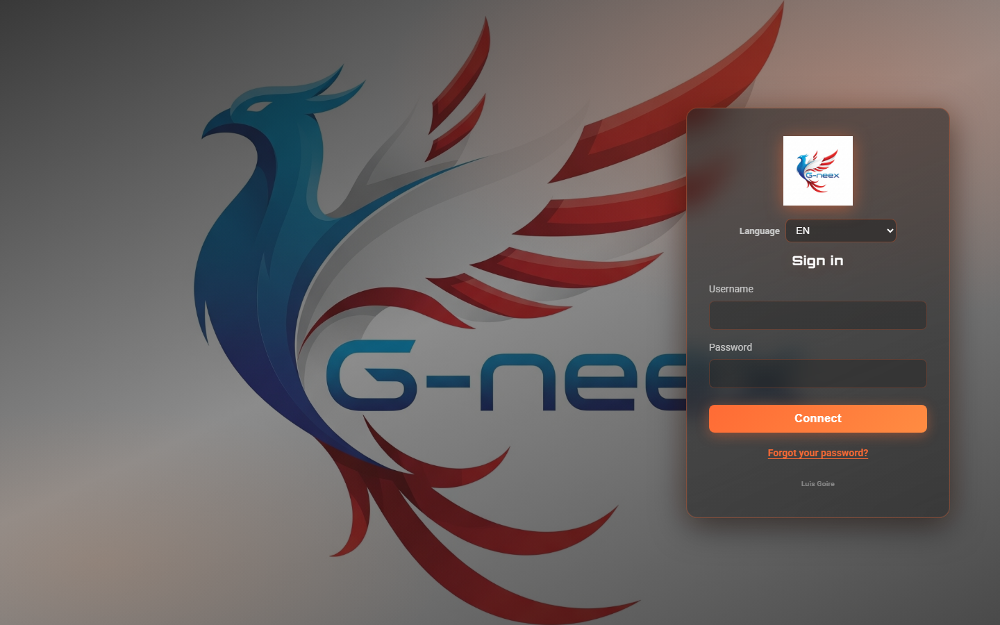
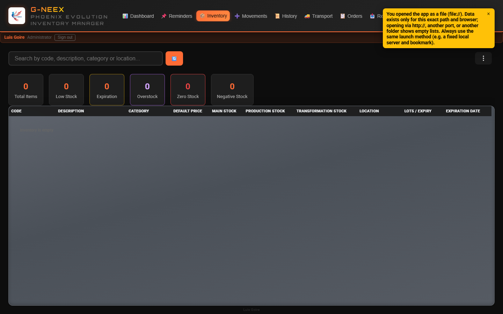
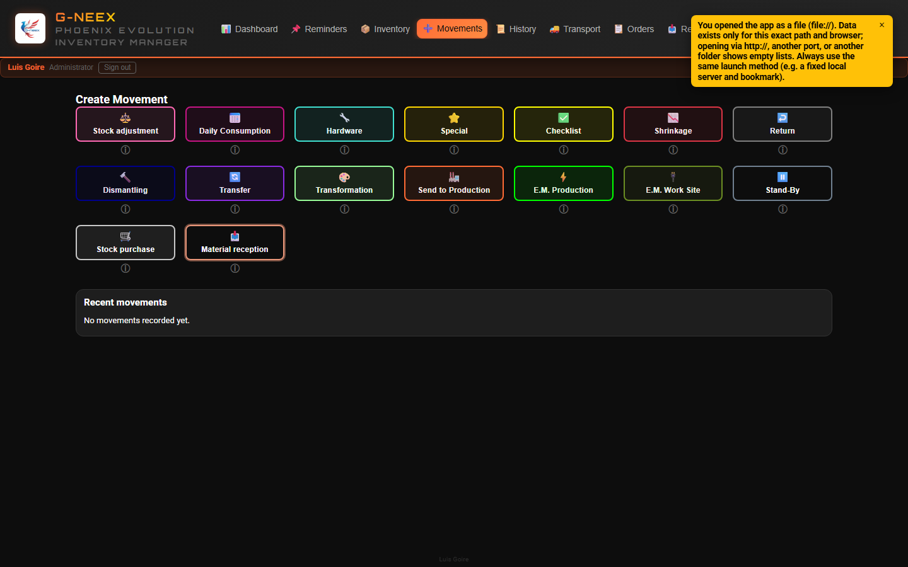
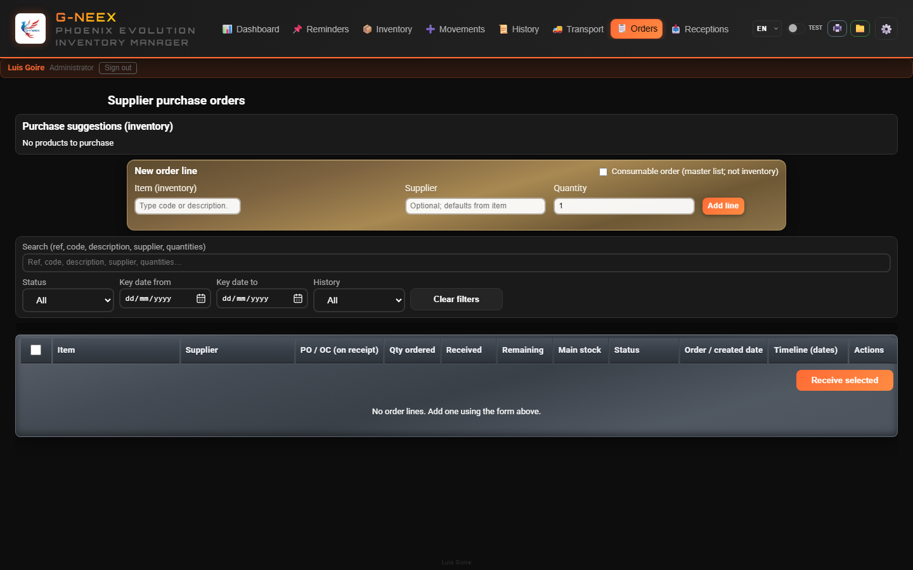
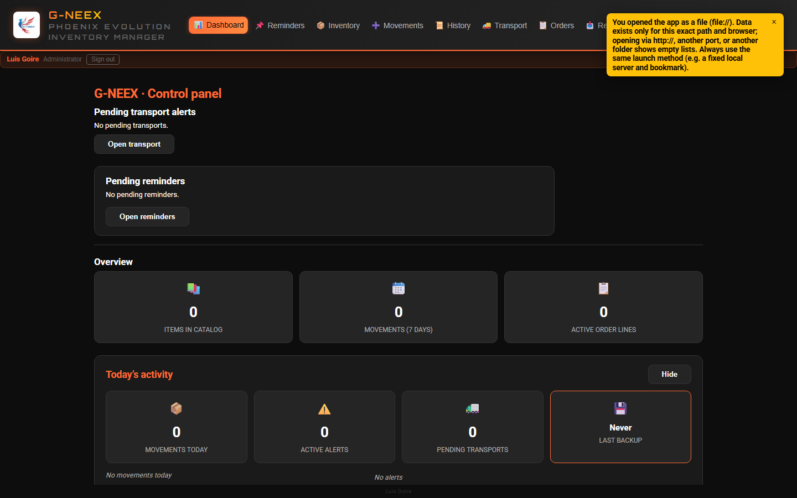
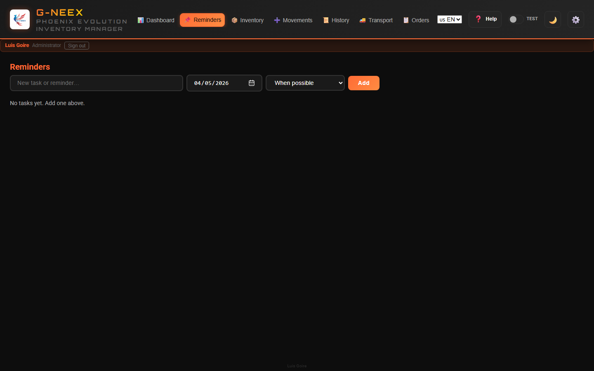

Comprehensive Inventory and Logistics Management System
Built by Luis Goire — programming enthusiast, aspiring professional developer.
Updated: May 2026 (v1.7)
G-NEEX
Project background
Industrial need: tighter inventory control with only a PC—no other stack.
Excel roots: a workbook that grew with macros as shop issues appeared; it became an embedded inventory manager.
Learning: automate real problems while building scripting and programming skills.
Phoenix: after serious file loss and recovery, the name means rising from the ashes—that sheet is G-NEEX’s DNA.
Today: the Phoenix spreadsheet still runs where it helps until G-NEEX is fully mature for daily web use.
Full narrative in the app: ⚙️ Settings → Background.
G-NEEX
The Problem
Electrical installation and industrial project companies face daily challenges:
Material chaos — No one knows what's in stock or where it is
Untracked movements — Materials leave without documenting who, when, or why
Disorganized transport — Paper checklists, trucks without tracking
No traceability — Impossible to trace the source of a shortage or excess
Internet dependency — Cloud systems that fail when you need them most
G-NEEX
The Solution: G-NEEX
G-NEEX is a web application that works 100% offline, directly in the browser, with no need for external servers or internet connection.
Browser-stored data: inventory, movements, and session live in the browser’s local storage. Lock the workstation, use personal accounts, export backups regularly, and only import JSON backups from trusted sources.
Backup & Import/Export: the Import/Export tab and critical backup actions are limited to the administrator account; temporary elevation does not replace that role. Login backgrounds may rotate per assets/login-bg-manifest.json. JSON import no longer removes unrelated local data when keys are absent from the file.
Stable URL: use one fixed address (e.g. http://127.0.0.1:PORT/) and do not mix file:// with HTTP.
Units of measure: the catalog keeps reserved U; each article may have a stock unit or none (no automatic assignment).
It manages the entire material lifecycle:
Intake → Warehouse → Dispatch → Transport → Job Site

Login screen
G-NEEX
Real-Time Inventory

Inventory tab (top bar)
Feature
Description
Full overview
Table with code, description, category, main/production/transformation stock, location, and expiration date
3 independent stocks
Main, Production, and Transformation — each with its own tracking
Instant search
Live filter by code, description, category, or location
Tools menu (⋮)
First item Hide inline filter bars (chevron): closes box / depot / consumable strips; disabled when no strip is open. The ⋮ menu groups export, print, filters, as-of date, summaries, etc.
Box / location filter
Dropdown: BOX columns (from Location text and box-stock rows), warehouse catalog (E1R, ETOP, BIN 8, ARMOIRE…) and per-location stock chips; chips in the table
Box summary
Groups by inferred box number; modal row click for lines (E1R etc. still detected in filter and tags)
Operational box stock
Real per-item box management: add/edit/delete boxes, redistribute across boxes / prod. & trans. columns and transfer from box to direct location (no box) with per-location balances (E2R: 12); unified Datos sheet (Codigo, Caja, UbicacionCaja, CantidadCaja, CantidadCajas, Vacia) for template, full export, and re-import
Automatic alerts
Low stock, negative stock, overstock, and upcoming expirations
Low-stock detail modal
Columns: ignore alert, Actions (🛒 add to purchase list), Code, then the rest of the item fields
As-of date mode
View inventory exactly as it was on a selected date
Color coding
Rows colored by item status for immediate visual identification
Export & print
Downloadable XLSX (themed table styling) and formatted print view
G-NEEX
16 Movement Types

Movements tab — type grid
G-NEEX supports 16 movement types covering all operations in an industrial warehouse:
Category
Types
Daily operations
Daily Consumption, Adjustment, Hardware, Special
Projects / Job site
Checklist, E.M. Job Site, E.M. Production, Waste
Reverse logistics
Return, Dismantle
Production
Send to Production, Transformation, Transfer
Supply
Stock Purchase, Material Reception
Planning
Stand-By (drafts with no effect until released)
On the Movements tab, choosing a type opens the form in an in-app overlay window (the type grid stays visible behind it).
For types that subtract stock, Stock source lets you choose which depot the quantity comes from: main (General warehouse), boxes, locations (labels only in the list), production stock, and transformation stock (quantity shown when applicable); the same SKU can appear on multiple lines with different sources. When both Destination and source appear, source drives the physical deduction and destination may differ.
Site E.M.: line quantities are inventory; Process movement asks for total boxes for the shipment (allocated across lines by quantity).
Each movement automatically records:
Who performed it
When it was executed
Previous stock for each affected item
Justification in case of overdraft
G-NEEX
Floating shortcuts — Movements
Floating shortcuts (default: bottom-right) stay hidden until you select the type under Movements:
Stand-by (⏸): quick list of drafts; panel, go to Movements, or hide (⏬).
Daily consumption (📅): panel of pending lines until Process all in one movement.
Drag the round button to place them on screen; position is saved on this device. Tap without dragging opens the panel.
Auto close: lines tied to the local day; catch-up after a date change or if the app was closed (automatic flow does not force an overdraft modal). With Daily consumption selected under Movements, the form is not interrupted (~23:00 / midnight roll); switching movement types applies anything pending.
Movement date: each line stores when it was added; on process, the movement time is the first cart line (fallback: process time if missing).
Decimals: at most four places on screen and in saved values.
“Other” recipient: type the name freely when it is not in the dropdown lists.
G-NEEX
Supplier orders

Orders tab
Orders tab: lines tied to inventory (supplier, quantity); PO/OC is captured on receipt in Stock purchase.
Filters: status (inactive, ordered, partial, full, cancelled), supplier, and item (code or description).
States: draft → ordered → partial/full receipt or cancelled; dates for tracking.
Receipt: opens the same Stock purchase form as under Movements; confirm with Process movement.
If you log a purchase only under Movements and a matching order line is open, Yes / No prompts link the movement and refresh the Orders panel.
Export / Print table: use the current filtered view; there is bulk cleanup (+1 year) and per-line removal (>3 months).
References: type letters + 6-digit sequence per type (e.g. AJU000001, COM000002); legacy refs normalize on load.
Provisional reception: some categories require PO and are handled as provisional before main-stock impact.
Actual receipt date (optional): you can set a past date for traceability (notes/timeline), while movement registration time stays current.
G-NEEX
List layouts
History tab (tiles / table / carousel)
History, Transport, and Orders include a View control for tiles, a compact list, and (where relevant) a detailed table; in History, a Chronological carousel is also available for horizontal card browsing. Minimized cards also show the Project ID when relevant.
In History, movements that are fully voided or partial annulments show a diagonal stamp (tilted dashed frame); filters also include annulment type.
On-screen dates (app-wide): day, 3-letter month, 4-digit year; with time, local 24-hour clock.
In History → Daily consumption by recipient, the table now supports editing recipients, saving changes, and clearing visible rows using current filters.
Attachments (📎) in movement detail and expanded transport: link files from any folder (no copy into the app); open with Chrome/Edge. JSON backups do not include file bytes—re-link on another PC.
Print from movement detail opens tables (aligned with XLSX export), not an on-screen layout snapshot.
The transport module automates shipment logistics to job sites:
Automatic creation — Checklists and E.M. Job Site generate transports automatically
Multi-truck — A project can have multiple transports if the load requires it
Visual board — Cards with status, lines, and expedition date
Controlled shipping — Can only ship when all lines are resolved
Manual creation — For exceptional cases without an associated checklist
Full history — Record of every action performed on the transport
Traceability — Transport tab summary (receptions waiting to ship, quantities on active truck lines, recent shipments, stock on hand) plus an editable manual list by material family and phase (on-site / truck / departed)
Per-truck report — Each truck can Export or Print a cargo table with materials, quantities, and current dimensions; with multiple packages per line, XLSX and print use stacked rows (fixed Package, L, W, H columns), not many horizontal columns.
G-NEEX
Dashboard — Instant Overview

Main screen after login (Summary tab)
Upon login, a panel displays the current operational status:
Visual indicators alert if there is critical stock or if the backup is more than 7 days old.
G-NEEX
Reminders

Reminders tab
Dedicated tab for operational reminders with due date and priority (per profile permissions)
Auto-escalation of priorities by business-day aging
Dashboard preview with quick navigation to reminders
Visibility: each user only sees reminders they created (the machine’s JSON backup may hold everyone’s).
G-NEEX
The app in use (on-screen)
Dashboard: navigation to the main modules
G-NEEX groups daily work in modules you open from the top bar: inventory, movements, history, transport, orders, reminders, and settings.
An administrator sets users under ⚙️ Settings → Users using generic templates or reference profiles (same behaviour as built-in accounts); keys are documented in PlantillasPermisos.xlsx.csv.
The user manual explains each screen and workflow. How access and copies are run on your site is an operational matter; the focus here is day-to-day use of the interface and inventory features.
G-NEEX
Reports and Exports
6 report types as .xlsx workbooks (orange header row, centered bold data, column widths) with descriptive filenames:
Transport summary
Detailed transport lines
Filtered movements (respects active filters)
Filtered movement lines
All movements
Consumption by specific item
Files include the date range in their name:
GNEEX_All_Movements_2024-03-15_to_2026-04-15.xlsx
Receptions (Settings): exporting or printing the filtered list uses the same packages-as-rows layout as the truck cargo report.
Consumables: marking an item inventory consumable in the editor and saving adds its name to Settings → Consumables; unchecking removes the matching entry.
G-NEEX
Data Protection
Feature
Description
Full backup
Exports the full database to JSON (inventory, movements, staff and occasional recipient lists, etc.)
Restore
Imports a previous backup and restores the full system
Archive movements
Exports old movements and removes them to free space
Reimport archives
Reintegrates archived movements without duplicating data
Movements-only export / merge
Export movement history alone; merge adds new ids only, applies stock (no full-db overwrite)
Initial inventory
Bulk upload via CSV or XLSX plus downloadable .xlsx template with correct columns and styling
Backup alert
Dashboard warns if more than 7 days without a backup
G-NEEX
Multi-Language and Customization
3 full languages
Español
English
Français
2 visual themes
Dark mode
Light mode
Demo mode (optional)
Test switch: blue theme and full app use; when turned off, previous data is restored and demo changes are discarded
Light/dark theme and language are not reverted
Confirmation to exit; banner under the header
Responsive design
Adapts to desktop, tablet, and mobile screens
Optimized text without unnecessary line breaks
Professional typography (Roboto + Orbitron)
G-NEEX
Technical Specifications
Aspect
Detail
Technology
HTML5, CSS3, JavaScript (vanilla)
Storage
Browser localStorage
Connection
No internet or server required
Installation
Open index.html in any modern browser
Compatibility
Chrome, Edge, Firefox, Safari
References
Prefix + per-type digits (AJU…, COM……); legacy may be digits-only
Multiple PCs
Each browser keeps its own data; not shared just by opening the same URL
External dependencies
Optional web fonts; XLSX export uses bundled xlsx-js-style in vendor/
Cinematic welcome splash (~6 s): "boot up" with Matrix scanner, neon flicker on "G-neex" and a real loading progress bar (~6 s per CSS).
Header logo as a shortcut: click the logo → counter-clockwise spin and triggers Update inventory (normalize locations/boxes, reconcile main stock, refresh lot expiry).
Boxes integrated into main stock: main stock auto-reconciles with boxes + locations; Update inventory repairs older backups.
Lots editor on the item: multiple expedition / expiry / quantity rows per item; effective expiry computed on the fly from shelf-life in months.
Expiration insight: new Affected quantity column with breakdown tooltip.
Stock-only template: export/import XLSX that only updates main-stock quantities.
Alignment with gneex-hosted-api: client ready to connect to the backend when it ships.